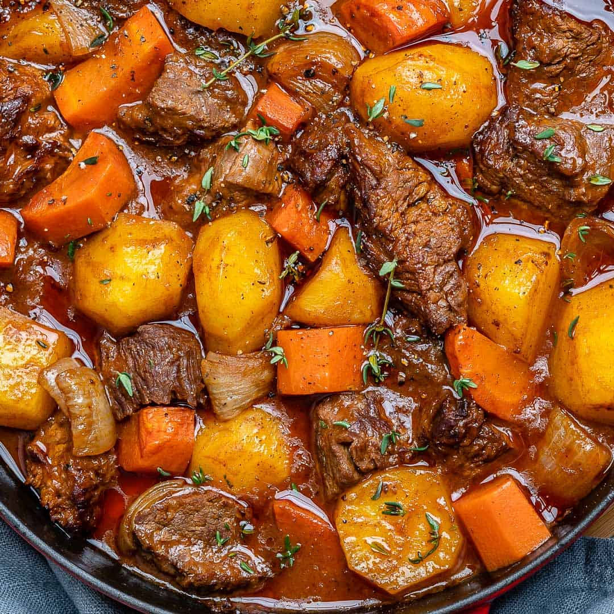

Beef Stew

Description
A tender, savory beef stew is like a big bowl of comfort food hugs.
Learn how to make the
best beef stew from scratch, using your
stovetop, oven, slow cooker, or Instant Pot.
Igredients
- tbsp. vegetable oil
- 2 lb. beef chuck stew meat, cubed into 1" pieces
- 1 tbsp. extra-virgin olive oil
- 1 medium yellow onion, chopped
- 2 carrots, peeled and cut into rounds
- 2 stalks celery, chopped
- Kosher salt
- Freshly ground black pepper
- 1/4 c. tomato paste
- 6 c. low-sodium beef broth
Step by Step
-
In a large dutch oven or heavy-bottomed pot over medium heat, heat oil. Add beef and cook until seared on all sides, 10 minutes, working in batches if necessary. Transfer beef to a plate.
-
In the same pot, cook onion, carrots, and celery until soft, 5 minutes. Season with salt and pepper. Add garlic and tomato paste and cook until garlic is fragrant and tomato paste has darkened, 2 minutes.
-
Add beef back to dutch oven then add broth, wine, Worcestershire sauce, thyme, and bay leaves.
-
Bring to a boil then reduce heat to a simmer. Season with salt and pepper. Cover and let simmer until beef is tender, 30 to 45 minutes.
-
Add potatoes and simmer, covered, until potatoes are tender, 15 minutes.
-
Remove bay leaves. Stir in peas and cook until warmed through, 2 minutes. Season stew to taste with salt and pepper, then ladle into serving bowls and garish with parsley.
Nutrition (per serving): 275 calories, 28 g protein, 21 g carbohydrates, 3 g fiber, 4 g sugar, 9 g fat, 3 g saturated fat, 490 mg sodium